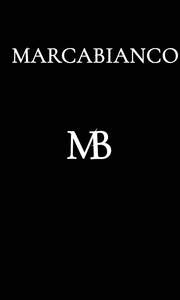

Trade Mark Journal No.2025/048 28 November 2025
UK00004295831 17 November 2025 (18,25,26)

- Class 18
- Bags for clothes; Clothes for animals; Bags; Tote bags; Luggage bags; Duffle bags; Duffel bags; Carry-on bags; Toiletry bags; Drawstring bags; Carry-all bags; Belt bags and hip bags; Nose bags [feed bags]; Bags (Nose -) [feed bags]; Carrying bags; Grocery tote bags; Cross-body bags; Bags for umbrellas; Diaper bags; Luggage, bags, wallets and other carriers; Crossbody bags; Cloth bags; Bucket bags; Leather bags; Sling bags; Nappy bags; Canvas bags; Belt bags; Duffel bags for travel; Clutch bags; Shoe bags; Wheeled bags; Kit bags; Messenger bags; Souvenir bags; Travel bags; Bags for travel; Leather bags and wallets; Garment bags; Shoulder bags; Toilet bags; Make-up bags; Cosmetic bags; Waterproof bags; Reusable shopping bags; Makeup bags; Umbrella bags; Towelling bags; Camping bags; Courier bags; Bags for campers; Roll bags; Bags for carrying pets; Knitted bags; Gym bags; Bags [envelopes, pouches] of leather, for packaging; Bags [envelopes, pouches] of leather for packaging; Bags [envelopes, pouches] for packaging of leather; Attaché bags; Hand bags; Travelling bags; Cabin bags; Flight bags; Traveling bags; Beach bags; Overnight bags; Bags for climbers; Mesh shopping bags; Mesh bags for shopping; Boot bags; Leather shopping bags; Canvas shopping bags; Bum bags; Hiking bags; Knitting bags; Frames for bags [structural parts of bags]; Roller bags; Nose bags; Wash bags for carrying toiletries; Suit bags; Hunting bags; Baby carrying bags; Gladstone bags; Waist bags; Feed bags.
- Class 25
- Clothes; Clothing; Swaddling clothes; Baby clothes; Beach clothes; Nappy pants [clothing]; Denims [clothing]; Jackets [clothing]; Work clothes; Shorts [clothing]; Aprons [clothing]; Drawers [clothing]; Drawers as clothing; Clothes for sports; Jackets (Stuff -) [clothing]; Stuff jackets [clothing]; Clothes for sport; Linen clothing; Headbands [clothing]; Headbands for clothing; Kerchiefs [clothing]; Bottoms [clothing]; Gloves [clothing]; Gloves as clothing; Capes (clothing); Furs [clothing]; Trunks being clothing; Maternity clothing; Babies' pants [clothing]; Clothing layettes; Jerseys [clothing]; Layettes [clothing]; Hoods [clothing]; Clothing for leisure wear; Gabardines [clothing]; Oilskins [clothing]; Woolen clothing; Clothing for babies; Ready-to-wear clothing; Bodies [clothing]; Garments for protecting clothing; Tops [clothing]; Gussets for underwear [parts of clothing]; Belts [clothing]; Belts for clothing; Playsuits [clothing]; Collars [clothing]; Pockets for clothing; Veils [clothing]; Knitwear [clothing]; Paper hats for use as clothing items; Corsets [clothing, foundation garments]; Silk clothing; Fabric belts [clothing]; Mitts [clothing]; Hats (Paper -) [clothing]; Paper hats [clothing]; Braces for clothing; Beach clothing; Belts (Money -) [clothing]; Money belts [clothing]; Chaps (clothing); Ready-made clothing; Gussets for bathing suits [parts of clothing]; Embroidered clothing; Casual clothing; Visors [clothing]; Knitted clothing; Shoes; Insoles for shoes and boots; Insoles [for shoes and boots]; High-heeled shoes; Wooden shoes [footwear]; Dress shoes; Sneakers [footwear]; Slip-on shoes; Leather shoes; Tongues for shoes and boots; Tennis shoes; Jogging shoes; Ballet shoes; Esparto shoes or sandals; Rubber shoes; Walking shoes; Shoes soles for repair; Hiking shoes; Pullstraps for shoes and boots; Esparto shoes or sandles; Basketball shoes; Athletic shoes; Running shoes; Volleyball shoes; Soccer shoes; Sandals and beach shoes; Sneakers; Shoe soles; Waterproof shoes; Heel pieces for shoes; Dance shoes; Snowboard shoes; Canvas shoes; Shoes for foot volleyball; Foot volleyball shoes; Wooden shoes; Platform shoes; Cycling shoes; Shoes for leisurewear; Sports shoes; Golf shoes; Footwear soles; Soles for footwear; Athletics shoes; Sport shoes; Yoga shoes; Mountaineering shoes; Hockey shoes; Baby shoes; Roller shoes; Football shoes; Riding shoes; Insoles for footwear; Gymnastic shoes; Baseball shoes; Bowling shoes; Rain shoes; Aqua shoes; Training shoes; Boxing shoes; Handball shoes; Fittings of metal for boots and shoes; Skiing shoes; Beach shoes; Flat shoes; Shoes for casual wear; Nursing shoes; Leisure shoes; Stiffeners for shoes; Shoes for infants; Rugby shoes; Heel protectors for shoes; Footwear; Women's shoes; Work shoes; Tap shoes; Flip-flops for use as footwear; Hidden heel shoes; Apres-ski shoes; Deck shoes; Driving shoes; Pumps [footwear]; Shoe soles for repair; Infants' shoes; Sandals; Studs for football shoes; Spiked running shoes; Anglers' shoes; Cleats for attachment to sports shoes; Boots; Trainers [footwear]; Shoe straps; Inner socks for footwear; Protective metal members for shoes and boots; Rubbers [footwear]; Wedge sneakers; Shoe uppers; Basketball sneakers.
- Class 26
- Brooches for clothing; Bows for clothing; Spangles for clothing; Frills for clothing; Cords for clothing; Brooches [clothing accessories]; Clothing buckles; Buckles for clothing; Buckles for clothing [clothing buckles]; Feathers [clothing accessories]; Fastenings for clothing; Clothing (Fastenings for -); Buttons for clothing; Cloth patches for clothing.
MARCABIANCO LTD